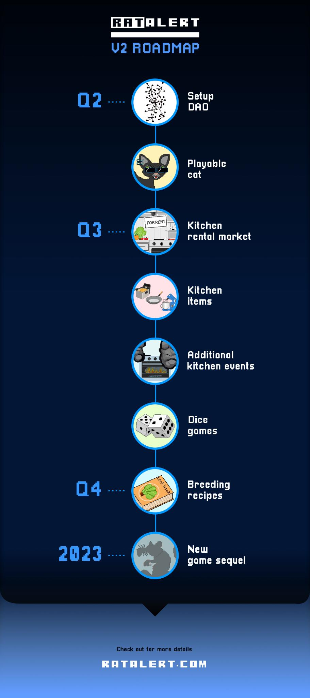

Roadmap
Setup DAO
As mentioned in the Whitepaper, RatAlert is going to be a DAO. In Q2/2022, we plan to provide the necessary infrastructure and tools to establish the RatAlert DAO. All development decisions and game parameters will be decided by the DAO in the future.
Playable Cat
While the cat was mentioned in the V1 whitepaper, it is still just a random event that can occur. We plan to have mintable cat NFTs, by the time chefs and rats are eligible to mint them in Q2/2022. Cats are able to kidnap up to 5 random obese rats and steal their loot every day.
Kitchen rental market
A big milestone is the kitchen rental market for the “TheStakehouse“ kitchen. The kitchen of the casual restaurant allows you to stake up to 10 chefs into your kitchen. The rental market allows you to rent out unused kitchen space to other people for a custom $CFOOD daily price. Earn extra $CFOOD with your unused kitchen spaces!
Kitchen items
We plan to offer custom kitchen upgrades for “TheStakehouse” and “LeStake” kitchen like better kitchen stoves or additional kitchen equipment, enabling you to earn more $CFOOD or $GFOOD on a daily basis. Kitchen upgrades (see rental market above) increase the daily rent you can ask from your tenants.
Additional kitchen events
We’re also planning to have extra kitchen events that will make the game more realistic and fun. Everybody is afraid of fires in their homes, so are your chefs. A really smart chef might buy a fire extinguisher to be prepared for a kitchen fire. God knows what would happen otherwise, right?
Dice Games
We want to make unstaking and claiming more fun. You’ll be able to opt in to extra mini dice games when interacting with your NFTs. No risk, no fun! Who knows, maybe you’ll be able to double your rewards?
Breeding recipes
What is a chef without his secret sauce? The recipe upgrade will allow the most skillful chefs to create their own recipes by burning the right combination of food tokens. Recipes will boost your chef’s earnings significantly if you decide to keep them for yourself…
New Game Sequel
In our minds, RatAlert is just the beginning of a whole universe of games. We are already thinking about a sequel that will re-use the RatAlert characters and tokens in a new game with all-new game mechanics and features in 2023. The RatAlert DAO would essentially become a P2E DAO with multiple games at that point.